What did Sagan predict?
In 1995, a year before his death, astronomer Carl Sagan published The Demon-Haunted World: Science as a Candle in the Dark. Near the beginning of the book, he sketched a dark vision of the country his descendants would inherit:
"I have a foreboding of an America in my children's or grandchildren's time — when the United States is a service and information economy; when nearly all the manufacturing industries have slipped away to other countries; when awesome technological powers are in the hands of a very few, and no one representing the public interest can even grasp the issues; when the people have lost the ability to set their own agendas or knowledgeably question those in authority; when, clutching our crystals and nervously consulting our horoscopes, our critical faculties in decline, unable to distinguish between what feels good and what's true, we slide, almost without noticing, back into superstition and darkness...
The dumbing down of America is most evident in the slow decay of substantive content in the enormously influential media, the 30 second sound bites (now down to 10 seconds or less), lowest common denominator programming, credulous presentations on pseudoscience and superstition, but especially a kind of celebration of ignorance."
Three decades later, Sagan's grandchildren are adults, and the passage goes viral every few months, shared by millions of people scrolling ten-second clips on feeds built by a handful of trillion-dollar companies. The medium has become part of the evidence.
But recognition is not proof. Sagan's passage is a set of testable claims about jobs, power, media, belief and cognition, and thirty years of data can now grade them.
The short answer: Sagan was right about the factories and the concentration of power, right but early about the media, and mostly right about superstition, which now travels through feeds rather than horoscopes. On his central charge, declining critical faculties, he was wrong for seventeen years after he wrote and has been increasingly right since 2012. And the decline is not uniform. It is an hourglass: the most skilled Americans are holding or gaining, the least skilled are falling fast, and the middle is thinning. A rich, technically fluent few above a swelling base that cannot judge what it reads is not a detour from Sagan's nightmare. It is how it arrives.
How did his predictions fare?
| Sagan's prediction | What the data show | Verdict |
|---|---|---|
| Factories move abroad; a service economy | Manufacturing fell from 21.7% of jobs in 1979 to 8.0% in 2026; services hold 86.4% | Came true |
| Technological power in a very few hands | Industry built 91% of notable AI models in 2025; Musk alone has put more than $650 million into the last two federal elections | Came true |
| Representatives cannot grasp the issues | Congress closed its technology office in 1995 and never fully rebuilt it | Mostly true |
| Shrinking sound bites, shallower media | 42 seconds in 1968, under 10 by 1988; news is now moving to feeds | Came true |
| A slide back into superstition | Astrology belief flat since 1990, but health and political myths spread through feeds, and measles is at a 35-year high | Mostly true |
| Critical faculties in decline | Gains until about 2012, then an hourglass: the top holds or gains, the bottom falls, the middle thins | Partly true |
1. Did the factories leave and the tech barons take over?
Yes, and the second half matters more. Manufacturing held 21.7% of U.S. payroll jobs in 1979, 14.7% when Sagan wrote and 8.0% in September 2026: 12.65 million of 159 million jobs. Service industries now hold 86.4%.
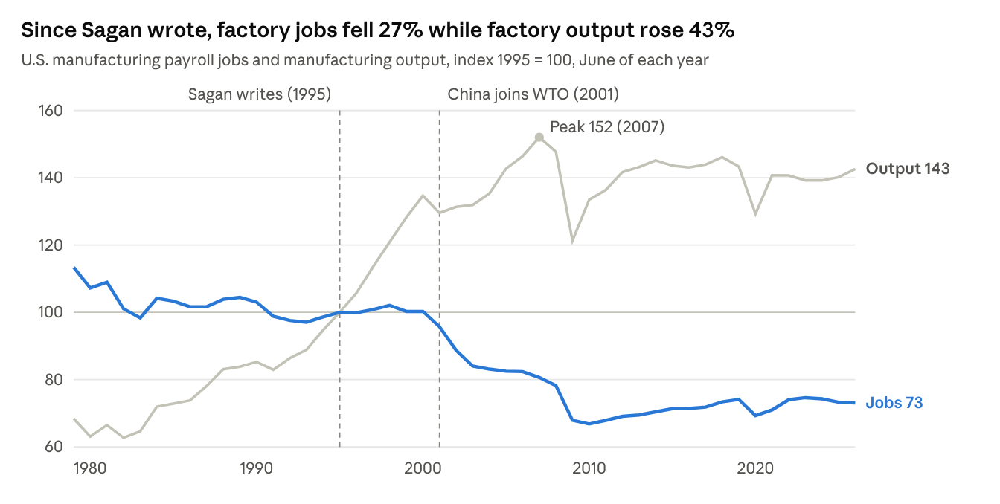
Rising output complicates the story without overturning it. Nearly all of the gain came before 2007, and much of it reflects quality adjustments for faster computer chips. Trade did more damage than robots: Chinese import competition alone cost an estimated 2.0 to 2.4 million U.S. jobs from 1999 to 2011.
The "very few" can be counted. Industry built 93 of 102 notable AI models in 2025; academia built two. The ten largest companies held almost 40% of the S&P 500 in mid-2025, the highest share since the mid-1960s, and four of them plan about $725 billion of capital spending in 2026, mostly on AI.
What turned tech giants into tech barons was a court ruling, not a product. Citizens United let corporations and the very rich spend without limit through super PACs from 2010. Those groups spent about $6.4 billion on federal races through 2022 and a record $2.7 billion in 2024 alone, and billionaires supplied 15% of all federal election money in the 2022 midterms.
Elon Musk shows what that money buys. He spent more than $290 million to elect Donald Trump and other Republicans in 2024, then ran the administration's DOGE cost-cutting drive while Tesla and SpaceX held at least $38 billion in federal contracts. The two fell out publicly in 2025 and have since reconciled: on October 8 Trump gave Musk the National Medal of Science, as Musk was pouring at least $366 million into the 2026 midterms, more than any other donor. It looks less like lobbying, more like friends with benefits.
The rest of the industry paid at the door. Meta, Amazon and OpenAI's Sam Altman gave $1 million each to Trump's inaugural fund, as did Microsoft. Apple, Amazon, Google, Meta, Microsoft, Palantir and Coinbase are among the donors to the new White House ballroom. An AI-industry super PAC, Leading the Future, raised $51 million for the midterms, half of it from Marc Andreessen and Ben Horowitz.
2. Did the media decay into sound bites?
Yes, but by 1995 that was already history. Harvard's Kiku Adatto measured candidate sound bites on network evening news at 42.3 seconds in 1968 and 9.8 in 1988, and they have hovered near 8 seconds since.
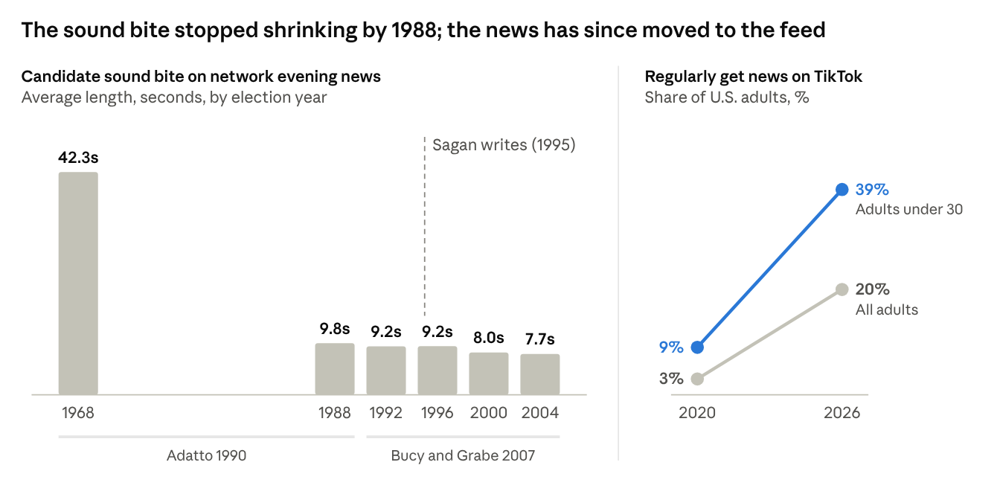
Two things changed instead. Television kept the picture and dropped the argument: "image bites," candidates seen but not heard, grew from 22 to 26 seconds per story between 1992 and 2004 and outlasted the sound bites. Then the news moved to the feed: one in five U.S. adults now regularly gets news on TikTok, as do nearly four in ten under 30.
3. Are we sliding back into superstition?
Mostly yes, though not the way Sagan pictured it. Old-fashioned superstition is flat: in Pew's 2024 survey, 27% of adults said they believe in astrology, statistically unchanged from 2017, and Gallup found about the same in 1990.
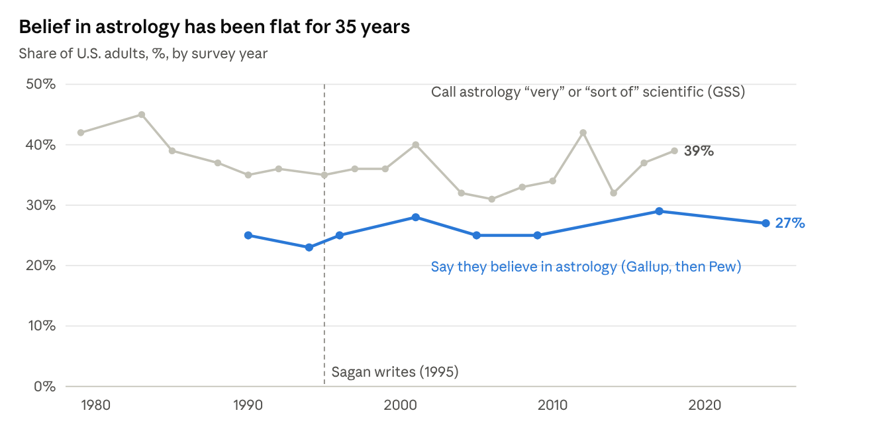
The new superstition arrives through the feed. A quarter of adults use social media for health information at least weekly, and they are more than twice as likely to believe the MMR vaccine causes autism: 37%, against 16% of those who never do. Few Americans are ardent believers in any one myth, but 31% sit in a "mixed middle," unsure what is true. Political news is sorted the same way: among 208 million U.S. Facebook users in 2020, exposure was highly segregated by ideology, and more so in what people engaged with than in what they could have seen.
Trust in science was dented, not broken: confidence that scientists act in the public interest fell from 87% in April 2020 to 73% in 2023, then recovered to 77%.
Where doubt meets biology, it becomes disease. A record 4.2% of kindergartners had a vaccine exemption in 2025–26, and two-dose MMR coverage slid from 95.2% to 92.4%, below the roughly 95% needed for herd immunity. The country's measles elimination status, held since 2000, is now in jeopardy.
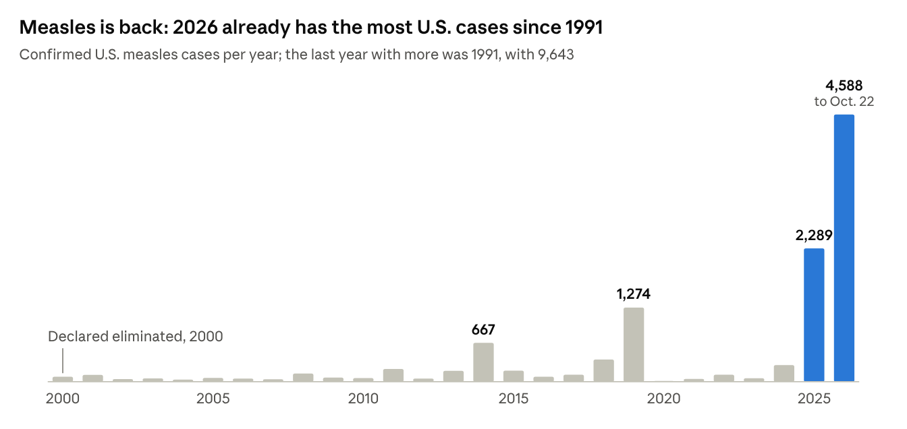
The skill that would prevent this is the one Sagan cared about most, and the OECD estimates that more than half of 15-year-olds may be vulnerable to misinformation. Horoscopes are flat; superstition has moved into the feed, and the inability to tell a reliable claim from a viral one is the real candle going out.
4. Did IQ scores rise, and are they now falling?
They rose for most of a century. James Flynn found that U.S. IQ scores climbed about 3 points per decade from 1932 to 1978, and a meta-analysis of 285 studies confirmed the gain. Better nutrition, longer schooling and work that rewarded abstract thought did the teaching. What an environment can teach, it can untrain.
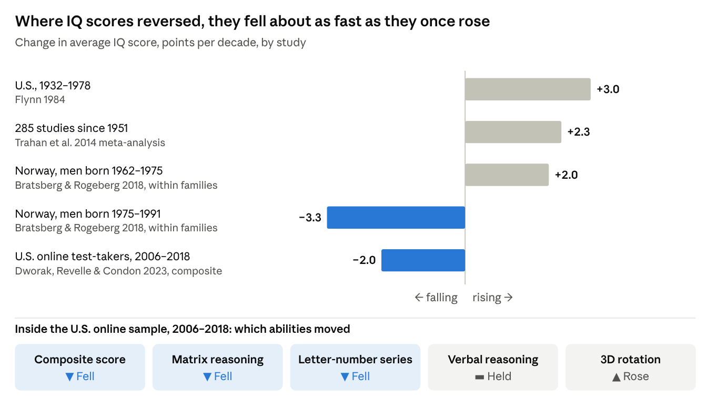
The strongest evidence of a reversal is Norwegian. Among 736,808 conscripts born 1962–1991, scores peaked with the 1975 birth cohort and then fell about a third of a point a year. Because the decline shows up between brothers, it cannot be a change in who has children; it is environmental. Danish scores turned down after the 1980 cohort.
The American evidence is thinner. Among 394,378 adults who took a free online test from 2006 to 2018, scores fell most among 18- to 22-year-olds. The sample is self-selected, so treat it as a warning light, not a verdict: the reversal is proven in Scandinavia and plausible in the U.S.
5. Are American students learning less?
Yes, and the losses run from the bottom up. NAEP's long-term trend has tested 13-year-olds with largely the same questions since the early 1970s. Four decades of gains ended in 2012; by 2025, math was back to its 1990 level and reading to its 1971 level.
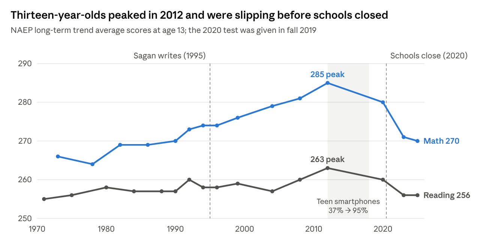
The shape is an hourglass. Since 2013, the weakest eighth-graders have lost about six times as much ground as the strongest; in reading, half of that loss came before 2020. In 2024, eighth-grade math was flat overall only because higher performers gained while lower performers fell, and twelfth-graders posted the lowest scores ever reported, with 45% below Basic in math.
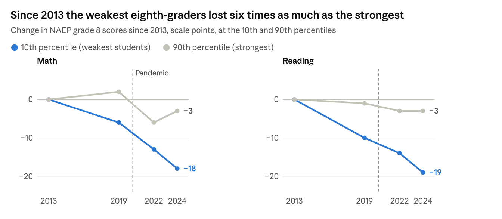
Internationally, the U.S. is falling more slowly than its peers. PISA 2025, released September 8, 2026, put U.S. 15-year-olds at record lows in math and reading. The OECD average fell further, so U.S. rankings rose to 13th in reading and 27th in math.
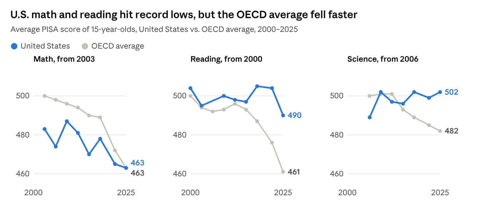
Two cautions apply. Over 40% of U.S. students skipped the background questionnaire after a testing pause in spring 2025, so the OECD could not rule out bias. And by the OECD's own estimate that U.S. students gain 12 to 14 points a school year, the 14-point reading drop is roughly a year of learning.
6. Is it just the kids?
No. Adults are slipping too, so schools cannot be the whole story. On the OECD's Survey of Adult Skills, U.S. literacy held steady from 2012 to 2017, then fell 13 points by 2023; numeracy fell 6. The share of adults at or below Level 1 in literacy, able to handle only short, simple texts, rose from 19% to 28%.
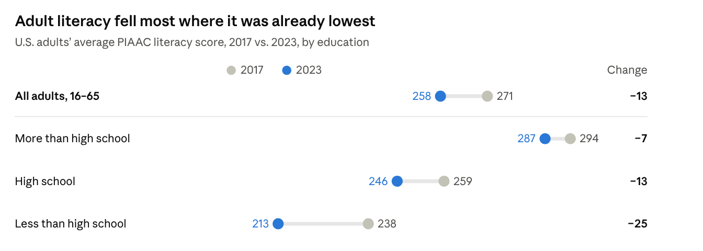
Here too the shape is an hourglass. The NCES commissioner described a "dwindling middle": more adults clustered at the bottom, a rising share at the very top of numeracy, and a gap between the most and least skilled that is the widest of any participating country. Across the OECD, only Finland and Denmark improved in literacy. The 2023 test changed format, so the size of the drop deserves care; its direction does not.
The habit that builds these skills is fading at every age, fastest among lower-income, less-educated and rural Americans.
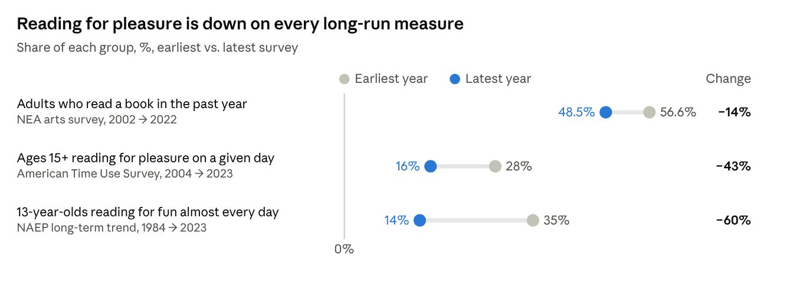
7. What is driving the decline?
No single cause fits all the evidence. Any explanation has to account for a turn around 2012, before the pandemic; losses concentrated among the weakest; and similar declines among adults and across rich countries.
| Explanation | Evidence | Verdict |
|---|---|---|
| Smartphones and social media | Teen smartphone access rose from 37% in 2012 to 95% in 2018, matching the turn. A strict Florida phone ban raised scores about 1 percentile, and causal evidence of harm is contested | Plausible contributor; measured effects modest |
| Less reading, more switching | Daily reading for pleasure fell from 28% to 16% of Americans; screen-switching time fell to about 47 seconds | Likely mechanism |
| Retreat from test-based accountability after 2013 | Scores rose fastest during the accountability era | Part of the U.S. school story; cannot explain adults or other countries |
| The pandemic and chronic absence | Chronic absenteeism rose from about 15% to 28.3% in 2021–22 and was still 22.6% in 2024–25 | Deepened the decline; did not start it |
| A changing mix of test-takers | Norway's decline appears within families; adult declines appear at every education level | Weak as the main cause |
The common thread is time and attention. Reading, attendance and practice build verbal and quantitative skill, and each has eroded since the early 2010s. That is Sagan's media worry, delivered by a medium he never saw.
The next test has already begun. In a field experiment with about 1,000 high-school math students, an unrestricted chatbot raised practice scores and then lowered exam scores once it was taken away. A tutor built to make students think avoided the loss.
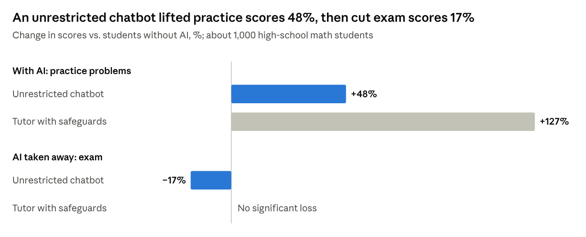
How AI enters classrooms may matter more than whether it does.
8. Did Sagan overstate it?
Partly. Sagan's own standard requires weighing the optimistic story, and it is real.
- Americans are far more educated. The share of adults 25 and older with a bachelor's degree rose from 23.0% in 1995 to about 39% in 2024.
- Scientific literacy rose for decades after he wrote. The share of adults able to follow a newspaper science section rose from 10% in 1988 to 28% in 2008.
- The top is holding, and the youngest are recovering. Strong eighth-graders scored about the same in 2024 as in 2013, U.S. PISA science rose from 489 in 2006 to 502, and 9-year-olds regained 3 to 4 NAEP points in 2025.
- Every generation thinks the next is slipping. In five preregistered studies, adults judged young people most harshly on the traits they themselves excel at. Richard Hofstadter won a Pulitzer for Anti-intellectualism in American Life in 1964.
- The measurements are noisy. The adult survey changed format, the 2025 U.S. PISA sample has a questionnaire gap, and the main U.S. IQ evidence comes from a self-selected online sample.
Still, the optimistic case is mostly about the years before 2012, and about the top. Credentials kept rising after that; for most Americans, the measures of skill did not.
9. Is America getting dumber, or splitting in two?
Splitting. For seventeen years after Sagan wrote, Americans grew more educated and, by most measures, more capable. Then, around 2012, the line turned, not into a slow, uniform rot but into an hourglass: a skilled top that holds or gains, a swelling base that falls, and a thinning middle. The timing fits the arrival of smartphones and feeds better than cultural decay, though nothing here proves cause.
That shape is what makes it a political problem. A uniform decline would make a country slower; an hourglass makes it easier to manipulate. A republic runs on a broad middle that can read a ballot measure, weigh a claim and notice when it is being sold something. The hourglass concentrates technical fluency and money at the narrow top, where since 2010 they convert freely into political power, and leaves the 28% of adults who read at the most basic level or below to get their facts from feeds tuned for engagement. The danger is not that intelligent people will disappear. It is that competence and power are concentrating together while the capacity to scrutinize them grows scarce.
None of this is destiny. The Flynn effect shows that measured skill follows what daily life demands. The levers with evidence behind them are known: attendance first, high-dosage tutoring for the bottom quarter, phone limits tested as experiments, protected time for long-form reading, classroom AI built as a coach rather than an answer machine, a technology office for Congress again, and full disclosure of the money flowing from tech fortunes into elections.
Sagan wrote The Demon-Haunted World as a manual, not an obituary. The candle has not gone out. But its light is reaching fewer people, and those left in the dark are increasingly governed by those who hold the flame.
Appendix: Sources
Economy and technology
- BLS via FRED: manufacturing employment, total payrolls, service-providing employment; Federal Reserve via FRED: manufacturing output
- Acemoglu, Autor, Dorn, Hanson and Price, NBER; Houseman, Upjohn Institute
- Stanford AI Index 2026; S&P Dow Jones Indices; Yahoo Finance, Big Tech 2026 capex
- AIP, Senate votes to terminate OTA (1995)
Money, power and pardons
- Brennan Center, how Citizens United reshaped elections
- Musk's political spending: 2024, via CNN; 2026 midterms, Forbes; AP via PBS
- Inaugural donations: CNBC via NBC; Gulf News; Fortune, White House ballroom donors; Bloomberg Government, Leading the Future
- Pardons: Campaign Legal Center (2026); Forbes (2026); The Block, Zhao pardon
Media and attention
- Adatto, Sound Bite Democracy (1990); Bucy and Grabe (2007)
- Pew Research Center, news on TikTok: 2026, 2025
- MarTech, Facebook–Nielsen study; goldfish myth, BBC and WSJ; Gloria Mark, University of California
Belief, science and health
- Pew, astrology and tarot (2025); Pew (2009); Gallup (2005); NSF Science & Engineering Indicators, Table S7-32
- Pew, confidence in scientists (2026)
- Congressional Research Service, measles 2025–2026; CDC measles counts via USAFacts; annual CDC counts, 2000–2024
Misinformation and information silos
- KFF Tracking Poll on Health Information and Trust (May 2026)
- González-Bailón et al., Science (2023), via NYU CSMaP
- NAGB, 10 takeaways from the 2024 NAEP
Intelligence and skills
- Flynn (1984); Trahan et al. (2014); Bratsberg and Rogeberg (2018); Hegelund et al. (2021); Dworak, Revelle and Condon (2023)
- NAEP: long-term trend 2025 appendix; long-term trend 2023; grade 8 percentiles; NAGB, grade 12 (2024)
- PISA: OECD, PISA 2025 Results; NCES, PISA trends; Chalkbeat; K-12 Dive
- Adult skills: NCES, PIAAC 2023; IES (2024); OECD, Survey of Adult Skills 2023
- Reading: Bone et al., via UCL; NEA; Pew, children reading for fun
Causes, AI and counterpoints
- Figlio and Özek, NBER; Odgers (2024); Staiger, WJLA; AEI, chronic absenteeism; Pew, teens and technology 2013, 2018
- Bastani et al. (2025), PNAS
- Census 1995; Census 2024; Jon Miller, civic scientific literacy; Protzko and Schooler (2019)
Charts
- Since Sagan wrote, factory jobs fell 27% while factory output rose 43%: BLS Current Employment Statistics (MANEMP) and Federal Reserve industrial production (IPMAN), via FRED · June values, 1979–2026
- The sound bite stopped shrinking by 1988; the news has since moved to the feed: Adatto 1990 (1968, 1988); Bucy & Grabe 2007, Table 1 (1992–2004, ABC, CBS, NBC); Pew Research Center surveys, 2020 and August 2026
- Belief in astrology has been flat for 35 years: Gallup (1990–2005); Pew Research Center (2009, 2017, 2024); NSF Science & Engineering Indicators 2020, Table S7-32 (General Social Survey) · Gallup and Pew wordings differ
- Measles is back: 2026 already has the most U.S. cases since 1991: CDC annual counts, 2000–2024; 2025 and 2026 (through Oct. 22) from CDC via USAFacts and the Congressional Research Service
- Where IQ scores reversed, they fell about as fast as they once rose: Flynn 1984; Trahan et al. 2014; Bratsberg & Rogeberg 2018; Dworak, Revelle & Condon 2023 (−0.013 SD a year at 15 IQ points per SD) · different tests and samples, so compare directions and rough sizes
- Thirteen-year-olds peaked in 2012 and were slipping before schools closed: NCES, NAEP long-term trend 2025 technical appendix, age 13 (revised format from 2004); teen smartphone access from Pew Research Center (2012 figure covers ages 12–17)
- Since 2013 the weakest eighth-graders lost six times as much as the strongest: NAEP Data Service, grade 8, national public and private schools, 2013–2024
- U.S. math and reading hit record lows, but the OECD average fell faster: NCES PISA highlights (2000–2022) and OECD PISA 2025 Results, Volume I · official trends from 2003 (math) and 2006 (science); no U.S. reading score in 2006; the OECD average covers a changing set of countries
- Adult literacy fell most where it was already lowest: NCES, PIAAC Cycle 2 U.S. national results, adults 16–65; IES press release, December 2024 · the 2023 survey used a new test format
- Reading for pleasure is down on every long-run measure: NEA arts participation survey (2002, 2022); Bone, Bu, Sonke & Fancourt, iScience 2025 (American Time Use Survey); NAEP long-term trend via Pew Research Center and NCES · “Change” is the relative decline in the share
- An unrestricted chatbot lifted practice scores 48%, then cut exam scores 17%: Bastani et al., PNAS 2025 · field experiment in high-school math; the tutor’s exam effect was not statistically significant
Comments